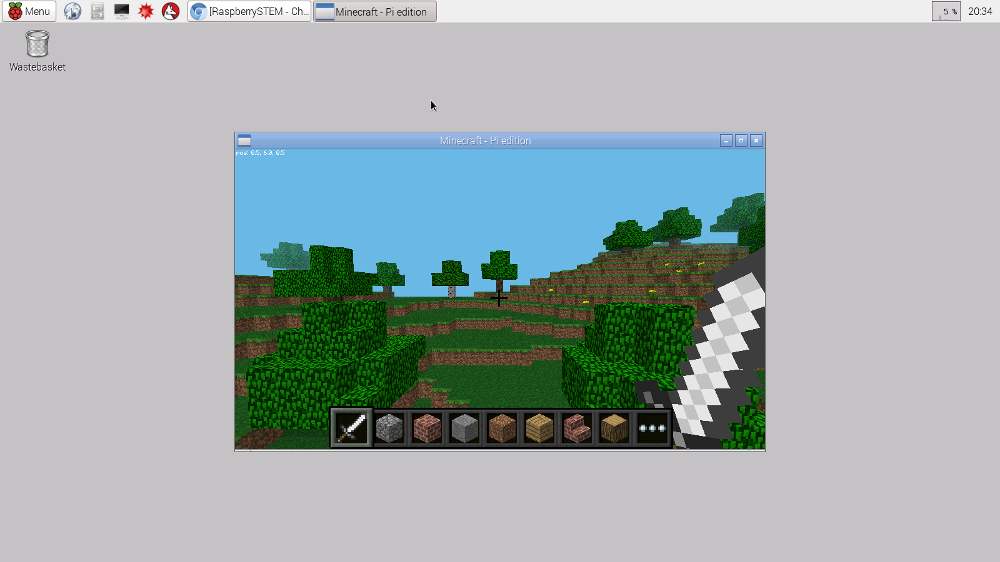

The next group of projects are all based around the game Minecraft, with the goal of allowing you to create and modify your own Minecraft controller. If you're not familiar with it, Minecraft is a video game where you construct and deconstruct various 3D worlds. Unlike many video games where there is a specific goal (get through levels, rescue the princess, etc), in Minecraft the goal is generally just to explore and have fun. The basic explore/create mode of the game is called "creative" mode. There is also a "survival" mode, where the game requires the user to find food, avoid angry mobs and keep from being attacked by various creators. But, many players find that simply creating and recreating their virtual world is challenge enough and stick with creative mode.
The Raspberry Pi comes preloaded with a simplified version of Minecraft tailored to the Raspberry Pi. It runs in creative mode only and has a custom API for editing the world and editing the the functionality inherent in you Minecraft character. Both single and multiplayer modes are supported. With the API you can create programs that interact with both your electronics AND the minecraft world. The next group of projects is geared towards allowing you to create and build your own Minecraft controller and then write the code to give your controller whatever functionality you wish.
In order to do your custom Minecraft programming with the RaspberrySTEM kit, you'll typically do the following steps (which we'll discuss in more detail below):
Exit this RDE to get to the Raspberry Pi desktop
Start Minecraft
Minimize Minecraft
Return to the RDE
Write and run your code from the RDE
Before you read any further, we have an important note that you're going to want to keep in mind as you run Minecraft on the Raspberry Pi. Every time you start Minecraft, you're eventually going to want to exit the game to get back to the RDE, but the game will take over the screen, the keyboard and the mouse while you're playing.
In order to get control of your keyboard/mouse back from the Minecraft game you need to press the "TAB" button on your keyboard.
This will then allow you to click on the menu items (minimize, exit) in the Minecraft window.
To get to the Raspberry Pi Desktop, you need to type CTRL-ALT-D (press the CTRL key, the ALT key and the letter D on the keyboard all at the same time). This will bring you to the "desktop," which looks like this:
Once on the Raspberry Pi Desktop, you open Minecraft by clicking on "Menu" in the upper left corner of the desktop, clicking on "Games" and then clicking on "Minecraft" -- like this:

To begin using Minecraft, first click the "Start Game" button from the main window:

Then click "Create new" to create a new world and start playing:

You're now playing Minecraft! The keyboard and mouse will control your player, named "Steve."
While you can continue to play Minecraft without any modifications, we think you'll have a lot more fun (and learn a lot more!) by using the RaspberrySTEM kit to program and modify the Minecraft world. To do that, you'll write programs using the RaspberrySTEM RDE -- just like we've been doing in all our previous projects. In order to get back to the RDE to start writing your programs, you'll first need to minimize the Minecraft window.
To do this, you'll need to:
Press the "TAB" key on the keyboard. This will free the mouse up so that it can be used to control the mouse cursor.
Then, click the minimize button in the upper right corner of the window.
Once the Minecraft window is minimized, to return to the RDE, you'll click on the minimized RaspberrySTEM window icon at the top of the screen. You're now back in the RDE.
Now that Minecraft is running in the background in a minimize window, it's time to start writing your custom Minecraft code. Let's jump into our first Minecraft project to get an idea of how that will work...